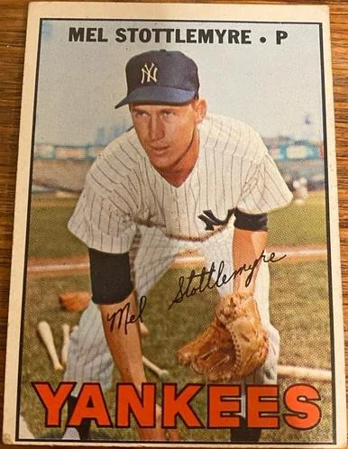
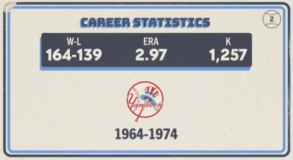

Mel Stottlemyre "Mel"
Career Highlights & Facts
(Facts are AI-generated and may require verification)
- A master of the heavy sinker, this pitcher was known for inducing groundouts at such a high rate that his batterymates often joked about his ability to serve up grounders all afternoon.
- He achieved the rare feat of hitting an inside-the-park grand slam, a highlight that stands out for a player primarily recognized for his work on the mound.
- Despite being a five-time All-Star and a cornerstone of the Yankees' rotation, he spent his entire playing career with the club during a decade often described as the team's lean years.
Would you like to find out more about Mel Stottlemyre?
Career Totals
| WAR | W | L | ERA | G | GS | SV | IP | SO | WHIP |
|---|---|---|---|---|---|---|---|---|---|
| 43.1 | 164 | 139 | 2.97 | 360 | 356 | 1 | 2661.1 | 1257 | 1.219 |
Statistics via Baseball-Reference.com
The Original Clue
